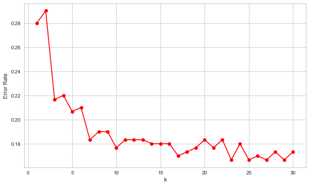
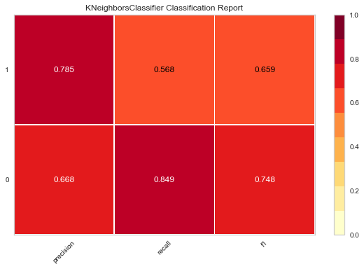
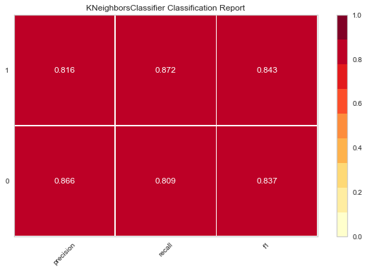

Python 3.7.0 (default, Jun 28 2018, 07:39:16)
Type "copyright", "credits" or "license" for more information.
IPython 7.4.0 -- An enhanced Interactive Python.
In [1]: runfile('/Users/captain/Desktop/Data Science/ML/KNN/KNN_Project.py', wdir='/Users/captain/Desktop/Data Science/ML/KNN')


precision recall f1-score support
0 0.67 0.85 0.75 152
1 0.79 0.57 0.66 148
micro avg 0.71 0.71 0.71 300
macro avg 0.73 0.71 0.70 300
weighted avg 0.73 0.71 0.70 300

precision recall f1-score support
0 0.87 0.81 0.84 152
1 0.82 0.87 0.84 148
micro avg 0.84 0.84 0.84 300
macro avg 0.84 0.84 0.84 300
weighted avg 0.84 0.84 0.84 300
In [2]: